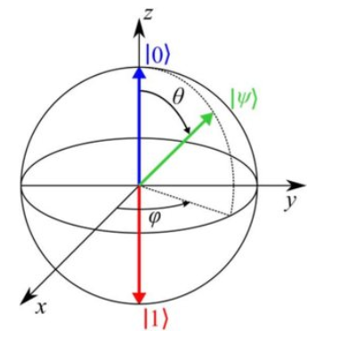
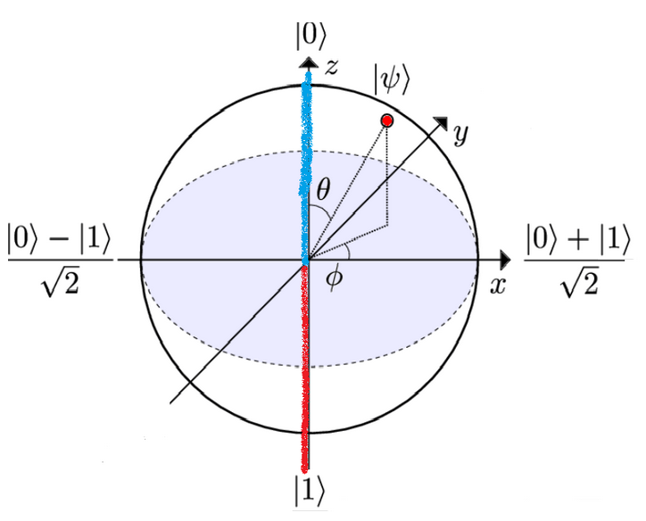

Representing Qubits¶
If we want to use a real quantum computer, we have to first understand how data is represented on this computer! We’ve gone through the ways that qubits can be represented using notation:
\(\uparrow\;qubit\;state\;=|0\rangle\)
\(\downarrow\; qubit\;state \;= |1 \rangle\)
We’ve gone through this a bit in Day 2 but now we’re going to introduce a new tool that can help us visualize these states.
We learned earlier how superposition states can be written as in terms of the \(|0\rangle\) and \(|1\rangle\) states:
\(\leftarrow\; = |0\rangle\frac{1}{\sqrt{2}} + |1\rangle\frac{1}{\sqrt{2}}\)
\(\rightarrow\; = |0\rangle\frac{1}{\sqrt{2}} - |1\rangle\frac{1}{\sqrt{2}}\)
This is a bit different from what we saw previously. Don’t worry about the square root of two for now — all this means is that the length of the vectors has to be equal to 1. We’re introducing this square root here so that you get used to it and avoid confusion later on: any online materials will use it. All you need to know is that any state can be written in terms of the two basis states, \(|0\rangle\) and \(|1\rangle\).
But we’re not here to do linear algebra! The point of introducing this notation is that we can use it to help visualize these quantum states. This can be done using something called the Bloch sphere.
First let’s remember that since any quantum state can be written by a combination of basis vectors, any state random state (represented here with the Greek letter ‘Psi’) can be represented with variables:
\(|\psi\rangle = |0\rangle\frac{a}{\sqrt{2}} + |1\rangle\frac{b}{\sqrt{2}}\)
This notation might be a little weird, but it’s worth the effort to understand it since most online resources will use this format!
Whew! That was a lot! Now that you’ve gotten through that notation, let’s take a look at how states can be visually depicted.This is where it all pays off, since you can now see the quantum states and how they will change!
All values of a and b can be used to cover all possible states. The states can be represented as points on the surface of a sphere called a Bloch sphere. The Bloch sphere is just a sphere placed at the center of a cartesian (x,y,z) coordinate system. This is useful because the basis states we already know, \(|0\rangle\) and \(|1\rangle\) can be fixed at opposite ends of this sphere:

Look at how the \(|0\rangle\) state is represented by a vector on the sphere pointing in the positive z direction, and \(|1\rangle\) is represented by a vector on the sphere pointing in the negative z direction. Can you see why this will be useful yet? You can reach any point on the sphere by combinations and rotations of these vectors.
Again, if you’re not too familiar with vectors, all you have to know for now is that the \(|0\rangle\) vector corresponds to the blue line, and the \(|1\rangle\) corresponds to the red line. If one end of these lines is fixed at the centre of the sphere, the ends with the little arrows can be rotated to touch all points on its surface:

Let’s show you what the \(|0\rangle\frac{1}{\sqrt{2}} + |1\rangle\frac{1}{\sqrt{2}}\) and \(|0\rangle\frac{1}{\sqrt{2}} - |1\rangle\frac{1}{\sqrt{2}}\) states look like. These correspond to vectors on the sphere pointing in the positive x and negative x directions.

Remember the exercises we did with quantum gates earlier, and how \(\uparrow\) and \(\downarrow\) could be transformed into \(\leftarrow\) and \(\rightarrow\) by applying an X gate? This is the same thing, in our new notation, as transforming \(|0\rangle\) into \(|0\rangle\frac{1}{\sqrt{2}} + |1\rangle\frac{1}{\sqrt{2}}\) and \(|1\rangle\) into \(|0\rangle\frac{1}{\sqrt{2}} - |1\rangle\frac{1}{\sqrt{2}}\) .
If you think about this in terms of rotations on the sphere, how do you have to rotate the blue line of the \(|0\rangle\) state to get the \(|0\rangle\frac{1}{\sqrt{2}} + |1\rangle\frac{1}{\sqrt{2}}\) state?
How can you rotate the blue line of state \(|0\rangle\) , assuming it is fixed at one end (at the center of the sphere) to get to the point at \(|0\rangle\frac{1}{\sqrt{2}} + |1\rangle\frac{1}{\sqrt{2}}\) on the positive x axis?
Rotate it towards the -z axis?
Rotate it towards the x axis?
Rotate it towards the y axis ?
You want to rotate it towards the x axis. Take a second to visualize this.
How can you rotate the blue line of state \(|0\rangle\), assuming it is fixed at one end (at the center of the sphere) to get to the point at \(|1\rangle\) on the negative z axis?
Rotate it by 90 degrees towards the x axis?
Rotate it by 180 degrees towards the -z axis?
Rotate it by 180 degrees towards the y axis ?
You want to rotate it towards the -z axis. Take a second to visualize this.
The cool thing is that now we can visualize the effect of the quantum gates we learned earlier, and we can use this knowledge to run some simple circuits on a quantum computer. Understanding the Bloch sphere will help you understand the results of those circuits!